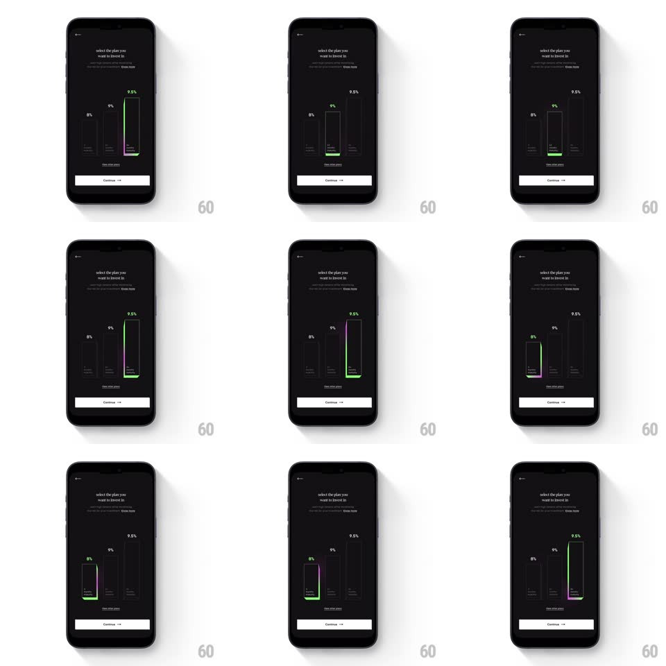

Media
Frame-by-frame

Rebuild this interaction 1:1: CRED's investment-plan selection - three vertical rate bars on near-black; tapping one wraps it in a glowing green-to-purple gradient border and lights its label green.

Rebuild this interaction 1:1: CRED's investment-plan selection - three vertical rate bars on near-black; tapping one wraps it in a glowing green-to-purple gradient border and lights its label green. ## Integration Integration: stack-agnostic spec - springs given as stiffness/damping, timed motions as duration + curve; map every value to your framework and animation library of choice. ## Scene A dark screen titled "select the plan you want to invest in" with three tall vertical bar cards showing 8%, 9%, and 9.5% (heights proportional to rate), a "view other plans" link, and a Continue button at the bottom. ## Motion spec Pattern: glowing-border card selection. - Entry: bars rise from the baseline to their heights (500ms, ease-out, 100ms stagger left to right) with labels fading in after. - Tap a bar: a 2px gradient border (green to purple, vertical) sweeps around the card's perimeter (stroke-draw, 350ms clockwise from top-left) and stays glowing (outer shadow bloom, 12px, 60% opacity, pulsing +-20% on a 1.6s loop); a green gradient fill washes up from the card's bottom edge (300ms) and the rate label crossfades gray to green (200ms). - Switching selection: the old card's border unwinds (reverse draw, 250ms) as the new card's draws - they overlap so the glow appears to travel. - Bars also respond with a press squash (scaleY 0.97, spring back ~450/24). - Continue enables on first selection (fills from ghost to solid white, 200ms). ## Calibration - Only one card glows at a time; unselected bars stay flat gray on black. - Bar heights must stay proportional to rates (9.5% bar ~19% taller than 8%). ## Reduced motion Selection is an instant border + fill swap; no glow pulse. ## Don't miss - The border is drawn, not faded - the sweep direction is visible. - Green is the selection accent; purple only exists inside the gradient border.